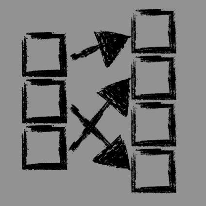

VADS

BLOOM FILTER
Probabilistic data structure
Probabilistic data structure
Description
The Bloom filter is a bitmap of m bits. At the very beginning, the user defines k independent hash functions, each of which is mapped to a filter, that is, to a bit array. If the function mapped to the i-th cell, the i-th bit becomes equal to one.Optimal number of hash functions: (m/n)ln2 ≈ 0.6931(m/n).
Use cases
Bloom filter allows you to determine that the element is not included in the set.For example, if a database is accessed, then the filter can say with 100% probability that the element is not there.Output cases
There are three possible outputs: the element is definitely not in the filter, the element may be present, or a false positive (occurs when the filter says that the element may be present, but it was not added).Probabilities
False positive probability: (1-e-kn/m)kFalse alarm probability: 2-k ≈ 0.6185m/n, where k - number of functions, m - filter size, n - number of added elements.